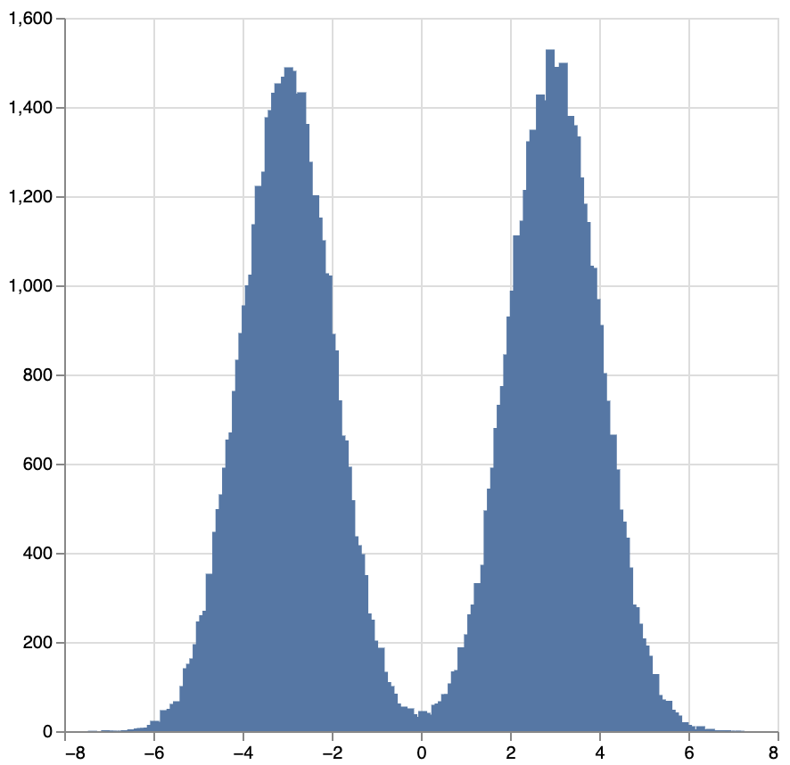

Monad-Bayes is a library for probabilistic programming written in Haskell.
Define distributions as programs
Perform inference with a variety of standard methods
Integrate with Haskell code like this because Monad-Bayes is just a library, not a separate language
Example
model :: Distribution Double
model = do
x <- bernoulli 0.5
normal (if x then (-3) else 3) 1
image :: Distribution Plot
image = fmap (plot . histogram 200) (replicateM 100000 model)
sampler imageThe program model is a mixture of Gaussians. Its type Distribution Double represents a distribution over reals.
image is a program too: as its type shows, it is a distribution over plots. In particular, plots that arise from forming a 200 bin histogram out of 100000 independent identically distributed (iid) draws from model.
To sample from image, we simply write sampler image, with the result shown below:
